Conceitos Gerais de Estatística
1 Conteúdos
- Distribuições de Probabilidade
- Variáveis Aleatórias
- Distribuições Contínuas
- Distribuição Normal
- Distribuição Exponencial
- Distribuição T-Student
- Distribuição Qui-Quadrado
- Distribuição F
- Amostragem Aleatória Simples
- Estatísticas
- Distribuições Amostrais
- Referências
2 Distribuições de Probabilidade
Neste capítulo vamos definir algumas distribuições de probabilidade que são consideradas como as mais conhecidas e as mais utilizadas nos processos de construção de Intervalos de Confiança e Testes de Hipóteses. Discutiremos sobre suas definições, seus parâmetros e seus usos no meio prático. Saber identificar se os dados seguem certa distribuição segue como um dos principais passos para se aplicar um teste de hipóteses.
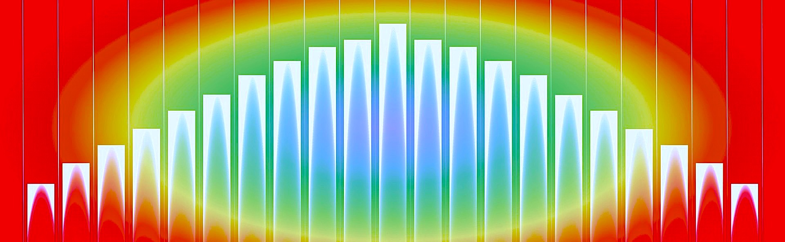
2.1 SciPy
O SciPy é o pacote básico da linguagem Python que implementa diversas técnicas úteis na computação científica. Utilizaremos essa biblioteca para calcular as probabilidades, construir Intervalos de Confiança e aplicar Testes de Hipóteses.
2.2 Importação
Serão importados os seguintes pacotes para gerar variáveis aleatórias, calcular as probabilidades e plotar gráficos.
import numpy.random as nr #Gerador de amostras aleatórias
import numpy as np
import scipy.stats as ss #Principal ferramenta para os cálculos de probabilidades.
from scipy.special import gamma # função Gama
import matplotlib.pyplot as plt #Construção de Gráficos3 Variáveis Aleatórias
Dado que o espaço amostral, representado pela letra grega , é definido como o conjunto formado por todos os possíveis resultados de um experimento aleatório, definimos como uma variável aleatória (v.a.) a função que associa cada elemento de a um número real.
Uma variável aleatória pode ser discreta quando o conjunto dos possíveis valores (imagem) for finito ou enumerável, ou contínua quando o conjunto dos possíveis valores for não enumerável, por exemplo intervalos na reta. O foco será nas variáveis aleatórias contínuas.
Distribuições Contínuas As distribuições contínuas descrevem o comportamento dos possíveis valores de uma variável aleatória contínua. Dentre as distribuições contínuas conhecidas, iremos apresentar:
- Distribuição Normal
- Distribuição Exponencial
- Distribuição T-Student
- Distribuição Qui-Quadrado
- Distribuição F
Defina-se a probabilidade de ocorrência sendo a área calculada sob a curva, ou seja, a probabilidade de uma observação assumir um valor entre dois pontos quaisquer equivale a área compreendida entre esses dois pontos. Através disso, dado que X é uma variável aleatória contínua e A um intervalo pertencente aos reais, definimos f sendo sua função de densidade de probabilidade (f.d.p) de forma que:
Para que a função f seja uma legítima função de densidade de probabilidade ela deve satisfazer as seguintes propriedades:
. . # Distribuição Normal A Distribuição Normal é uma das mais importantes entre as distribuições contínuas. Sua importância se deve a vários fatores, dentre eles temos o Teorema Central do Limite (TCL), o qual é um resultado fundamental em aplicações práticas e teóricas, pois ele garante que, mesmo que os dados não sejam distribuídos segundo uma normal, a distribuição da média amostral dos dados se comporta como uma distribuição normal conforme o número de dados aumenta. Diversos estudos práticos tem como resultado uma distribuição normal, como por exemplo a altura de uma certa população em geral.
Diz-se que, uma variável aleatória contínua X, definida para todos os valores nos reais, tem Distribuição Normal com parâmetros µ e σ², onde −∞ < µ < ∞ e 0 < σ² < ∞, se sua função densidade de probabilidade é dada por:
Os parâmetros e ² são a média e a variância da distribuição Normal, respectivamente. Usaremos a seguinte notação para indicar que X tem distribuição normal com parâmetros µ e σ²: X ∼ N(µ, σ²).
Uma das características da distribuição Normal é que ela é simétrica em torno de sua média , ou seja, há 50% de probabilidade acumulada à esquerda e à direita da média. Outra característica é o seu formato de “sino”, a seguir ilustramos esse comportamento através das densidades X ~ N(0,1), X ~ N(0,2) e X ~ N(3,1).
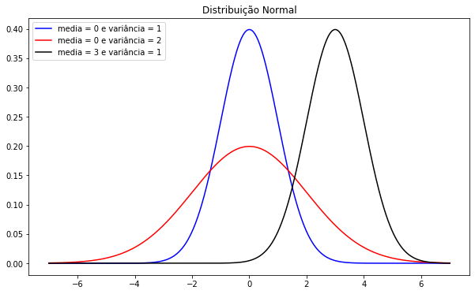
Nota-se que os dois parâmetros influenciam na caracterização das densidades. Assim temos:
- µ como parâmetro de locação, o qual designa o efeito de deslocar horizontalmente o gráfico de f(x).
- σ como parâmetro de escala, o qual designa o efeito de alongar/contrair o gráfico de f(x).
Como exemplo vamos plotar o histograma de uma amostra aleatória de distribuição normal de tamanho 1000 que representa os pesos dos homens de uma população de uma certa cidade, com 𝜇 = 80 e 𝜎² = 4 junto a sua curva de densidade.
Para utilizar a função nr.normal() para gerar números aleatórios de uma distribuição normal, deve-se ter atenção aos seus principais argumentos de entrada:
- loc: parâmetro 𝜇, ou seja, a média dos dados.
- scale: parâmetro 𝜎, ou seja, o desvio padrão dos dados.
- size: tamanho da amostra.
nr.seed(15)
sample=nr.normal(80, 2, 1000)
fig, ax = plt.subplots()
n, x, patches = ax.hist(sample, bins=80, density=1)
y = ((1 / (np.sqrt(np.pi*8))) *
np.exp((-(x - 80)**2)/8)) # Densidade de X ~ N(80,4)
ax.plot(x, y, '--')
ax.set_xlabel('Valores')
ax.set_ylabel('Densidade')
ax.set_title(r'Peso dos Homens: $\mu=80$, $\sigma=2$')
fig.tight_layout()
plt.show()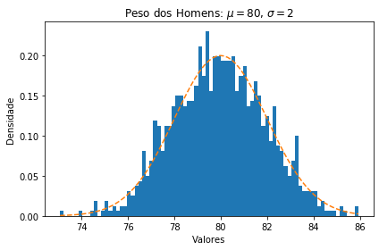
Utilizando essa mesma distribuição, onde X ~ N(80,4), vamos calcular algumas probabilidades:
Para calcular a densidade de probabilidade deve ser utilizada a função norm.pdf(). Para exemplificar, iremos calcular a densidade de probabilidade no ponto x = 80, ou seja, .
ss.norm.pdf(80,80,2)Para calcular a probabilidade acumulada até um certo ponto, utilizamos a função norm.cdf(). Para exemplificar, calcularemos a probabilidade acumulada .
ss.norm.cdf(80,80,2)Para calcular um percentil dessa distribuição, utilizamos a função norm.ppf(). Para exemplificar, calcularemos o percentil 75, ou seja, achar o k, tal que .
ss.norm.ppf(0.75,80,2)4 Distribuição Exponencial
A distribuição exponencial é muito útil para descrever o tempo que se leva para completar uma tarefa ou tempo de duração de um equipamento. Como exemplos de aplicações temos:
- Tempo para realizar uma prova
- Tempo de chegadas de pacotes em um roteador.
- Tempo de vida de aparelhos.
- Tempo de espera em restaurantes, caixas de banco, postos de saúde.
Uma variável aleatória X contínua tem distribuição exponencial com parâmetro λ > 0 se sua função densidade de probabilidade é dada por:
Onde λ é o parâmetro da densidade exponencial, e denotamos por X ~ exp(λ). Dentre suas propriedades temos que a média da distribuição é igual a 1/λ. A seguir podemos visualizar A seguir podemos visualizar o comportamento da densidade para diferentes valores de λ.
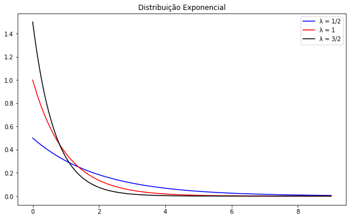
Como exemplo iremos plotar o histograma de uma amostra aleatória de distribuição exponencial de tamanho 500 onde X é o tempo(em minutos) para realizar uma prova de Cálculo 1A na UFF, com λ = 1/90 junto a sua curva de densidade.
Para gerar números provenientes de uma exponencial com λ=1/90, utiliza-se a função nr.exponencial sendo os principais argumentos de entrada:
- scale: 1/λ, ou seja, a média dos dados.
- size: o tamanho da amostra.
nr.seed(20)
sample=nr.exponential(90, 500)
fig, ax = plt.subplots()
n, x, patches = ax.hist(sample, bins=100, density=1)
y = (1/90)*np.exp(-(1/90)*x)# Densidade de X ~ exp(1/90)
ax.plot(x, y, '--')
ax.set_xlabel('Tempo em Minutos')
ax.set_ylabel('Densidade')
ax.set_title(r'Tempo para Realizar uma prova de Cálculo 1A: $\lambda=1/90$')
fig.tight_layout()
plt.show()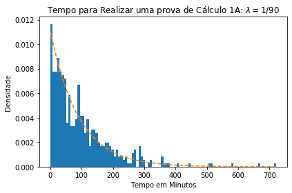
Utilizando essa mesma distribuição, onde X ~ exp(1/90), vamos calcular algumas probabilidades:
Para calcular a densidade de probabilidade deve-se utilizar a função expon.pdf(). Para exemplificar, vamos calcular a densidade de probabilidade em x = 3, ou seja, .
ss.expon.pdf(3,scale=90)Para calcular a probabilidade acumulada até um ponto, utiliza-se a função expon.cdf(). Para exemplificar, vamos calcular a probabilidade acumulada :
ss.expon.cdf(200,scale=90)Caso queira calcular o percentil da distribuição utilize a função expon.ppf(). Para exemplificar, vamos calcular o percentil 50 dessa distribuição, ou seja, descobrir o k, tal que .
ss.expon.ppf(0.5,scale=90)5 Distribuição T-Student
A distribuição t de Student é considerada uma das distribuições mais utilizadas na estatística com aplicações que vão desde a modelagem de dados até aplicações de Testes de Hipóteses.
Dizemos que X tem distribuição de t de Student com n graus de liberdade se sua função de densidade de probabilidade é dada por:
Utilizamos a notação X ~ , onde . A seguir ilustramos a densidade para diferentes graus de liberdade:
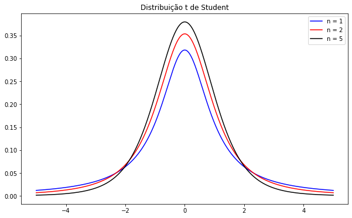
Propriedades:
- Quanto maior o grau de liberdade, mais a distribuição t de Student se aproxima da distribuição Normal.
- Média = 0, caso n>1
Para exemplificar, nós iremos plotar o histograma de uma amostra aleatória de distribuição T de Student de tamanho 1000 com 15 graus de liberdade, junto a sua curva de densidade.
nr.seed(10)
n=15
sample=nr.standard_t(n, 1000)
fig, ax = plt.subplots()
tam, x, patches = ax.hist(sample, bins=60, density=1)
y = ( (gamma( (n+1)/2 ))/ (np.sqrt(n*np.pi)* gamma(n/2)) ) * (1 +(( x**2)/n))**(-(n+1)/2)
ax.plot(x, y, '--')
ax.set_xlabel('Valores')
ax.set_ylabel('Densidade')
ax.set_title(r'Amostra T-Student com 15 Graus de Liberdade')
fig.tight_layout()
plt.show()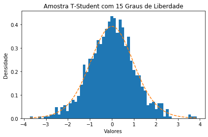
Utilizando essa mesma distribuição, onde X ~ , vamos calcular algumas probabilidades:
Para calcular a densidade de probabilidade deve ser utilizada a função t.pdf(). Para exemplificar, iremos calcular a densidade de probabilidade no ponto x = 0.5, ou seja, .
ss.t.pdf(0.5,15)Para calcular a probabilidade acumulada até um certo ponto, utilizamos a função t.cdf(). Para exemplificar, calcularemos a probabilidade acumulada .
ss.t.cdf(1,15)Para calcular um percentil dessa distribuição, utilizamos a função t.ppf(). Para exemplificar, calcularemos o percentil 75, ou seja, achar o k, tal que .
ss.t.ppf(0.75,15)6 Distribuição Qui-Quadrado
A distribuição qui-quadrado será muito importante para quando tratarmos de Intervalo de Confiança e Teste de Hipótese para variância populacional.
Seja X uma variável aleatória contínua que assume somente valores positivos, temos que X segue uma distribuição Qui-Quadrado com n graus de liberdade se sua função de densidade é dada por:
A notação utilizada é X ~ ² . A seguir ilustramos como se caracteriza a densidade com diferentes graus de liberdade:

Após apresentados os gráficos e a fórmula de densidade de probabilidade, temos que a Qui-Quadrado é um caso especial da distribuição Gama com α = n/2 e β = 2. Para saber mais sobre a Distribuição Gama, clique aqui (link quebrado)
Como exemplo, vamos observar uma amostra aleatória de tamanho 1000 proveniente de um distribuição qui-quadrado com 5 graus de liberdade, junto a sua curva de densidade.
nr.seed(15)
n=5
sample = nr.chisquare(n, 1000)
fig, ax = plt.subplots()
tam, x, patches = ax.hist(sample, bins = 80, density = 1)
y = (1/(gamma(n/2)*(2**(n/2)))) * (x ** ((n/2) - 1)) * np.exp(-x/2)
ax.plot(x, y, '--')
ax.set_xlabel('Valores')
ax.set_ylabel('Densidade')
ax.set_title('Amostra Qui-quadrado com 5 Graus de Liberdade')
fig.tight_layout()
plt.show()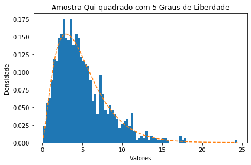
Utilizando essa mesma distribuição, onde X ~ ² , vamos calcular algumas probabilidades:
Para calcular a densidade de probabilidade deve ser utilizada a função chi2.pdf(). Para exemplificar, iremos calcular a densidade de probabilidade no ponto x = 5, ou seja, .
ss.chi2.pdf(5, 5)Para calcular a probabilidade acumulada até um certo ponto, utilizamos a função chi2.cdf(). Para exemplificar, calcularemos a probabilidade acumulada .
ss.chi2.cdf(4, 5)Para calcular um percentil dessa distribuição, utilizamos a função chi2.ppf(). Para exemplificar, calcularemos o percentil 75, ou seja, achar o k, tal que .
ss.chi2.ppf(0.75, 5)7 Distribuição F
A distribuição F será fundamental para análise de variâncias que será apresentado nos próximos capítulos.
Uma variável aleatória contínua X possui distribuição F de Snedecor com m e n graus de liberdade se sua função de densidade é definida por:
Neste caso, utilizamos a notação , onde e . A seguir podemos visualizar como se caracteriza a densidade dessa distribuição quando o valor de = 20 e varia entre 1,10 e 50.
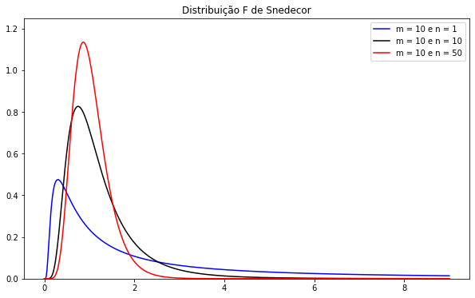
Propriedade: Sejam U e V duas variáveis aleatórias independentes tais que U ~ \(X^{2}{m} X^{2}{n}\). Seja:
Temos que W tem distribuição F de Snedecor com m e n graus de liberdade. Assim, tem-se que os graus de liberdade da distribuição F referem-se aos graus de liberdade das duas variáveis Qui-quadrado.
Para exemplificar, vamos observar uma amostra aleatória de tamanho 10000 proveniente de um distribuição F com m = 20 e n = 50, junto a sua curva de densidade.
m = 20
n = 50
nr.seed(15)
sample = nr.f(m, n, 10000)
fig, ax = plt.subplots()
tam, x, patches = ax.hist(sample, bins = 80, density = 1)
y = (gamma((m + n)/2)/(gamma(m/2)*gamma(n/2))) * ((m/n) ** (m/2)) * ((x ** ((m/2)-1))/((1 + (m/n) * x) ** ((m + n)/2)))
ax.plot(x, y, '--')
ax.set_xlabel('Valores')
ax.set_ylabel('Densidade')
ax.set_title('Amostra F com m = 20 e n = 50 graus de liberdade')
fig.tight_layout()
plt.show()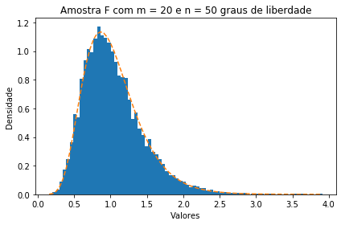
Utilizando essa mesma distribuição, onde , vamos calcular algumas probabilidades:
Para calcular a densidade de probabilidade deve ser utilizada a função f.pdf(). Para exemplificar, iremos calcular a densidade de probabilidade no ponto x = 1, ou seja, .
ss.f.pdf(1, 20, 50)Para calcular a probabilidade acumulada até um certo ponto, utilizamos a função f.cdf(). Para exemplificar, calcularemos a probabilidade acumulada .
ss.f.cdf(1.5, 20, 50)Para calcular um percentil dessa distribuição, utilizamos a função f.ppf(). Para exemplificar, calcularemos o percentil 75, ou seja, achar o k, tal que .
ss.f.ppf(0.75, 20, 50)8 Amostragem Aleatória Simples
Procedimento de seleção de amostras que considera que todas as amostras de tamanho n tem a mesma chance (global) de seleção, podendo ser realizado com reposição ou sem reposição. Uma amostra aleatória de tamanho n de uma variável aleatória X com distribuição de probabilidade é o conjunto formado pelas variáveis independentes e identicamente distribuídas com .
9 Estatísticas
Obtida uma amostra aleatória, é possível definir funções reais da amostra aleatória. Como o seu valor depende da amostra sorteada, uma função da amostra aleatória também é uma variável aleatória. Por exemplo, a média amostral é a variável aleatória definida por:
Outro exemplo é a variância amostral:
Dizemos que uma estatística ou estimador T é qualquer função da amostra que não depende dos parâmetros da distribuição f, isto é,
10 Distribuições Amostrais
A distribuição amostral de uma estatística T é a função de probabilidade de T ao longo de todas as possíveis amostras de tamanho n.
Nos problemas de inferência, estamos interessados em estimar um parâmetro θ da população (por exemplo, a média populacional) através de uma amostra aleatória simples . Para isso, usamos uma estatística T (por exemplo, a média amostral) e, com base no valor obtido para T a partir de uma particular amostra, iremos tomar as decisões que o problema exige.
Agora vamos descrever alguns exemplos de distribuições amostrais:
Distribuição da Média Amostral: Seja uma amostra aleatória simples de tamanho n de uma população normal, isto é, uma população representada por uma variável aleatória normal µ² . Então, a distribuição da média amostral é normal com média µ e variância
, ou seja,
µ µ
A seguir ilustramos esse comportamento através de uma amostra aleatória simples de tamanho 25:
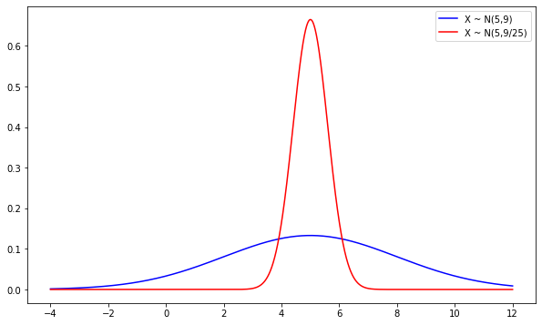
Em azul temos uma amostra de tamanho 1 e em vermelho, 25. Veja que os dados ficam mais “concentrados”, ou seja, a variância decai conforme o tamanho da amostra aumenta, o que estabelece um formato de “sino” mais estreito ao gráfico. Isso ocorre através do efeito de escala determinado pela variância da distribuição.
- Distribuição Amostral de
-
Seja uma amostra aleatória simples de tamanho n de uma população normal, isto é, uma população representada por uma variável aleatória normal X ∼ N(µ; σ²) e a variância amostral. Então, a distribuição amostral da variância
é Qui-Quadrado com graus de liberdade.
Esse resultado será muito importante para os próximos cadernos, quando trataremos do Intervalo de Confiança e Teste de Hipótese para variância.
11 Referências
FARIAS, A. M. L. KUBRUSLY, J. SOUZA, M.A.O. Probabilidade e Variáveis Aleatórias Unidimensionais. Departamento de Estatística. Universidade Federal Fluminense. Velarde, L. G. C. CAVALIERE, Y. F. Apostila Inferência Estatística. Departamento de Estatística. Universidade Federal Fluminense FARIAS, A. M. L. Apostila de Estatística II. Departamento de Estatística. 2017. Universidade Federal Fluminense.